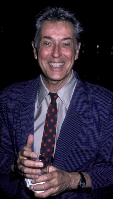
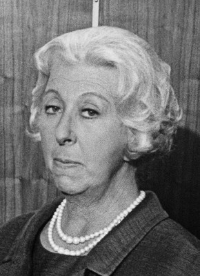
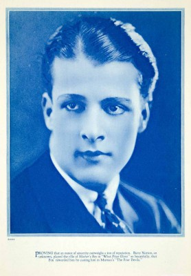
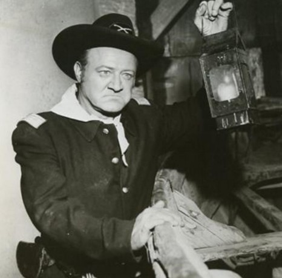
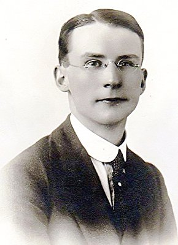
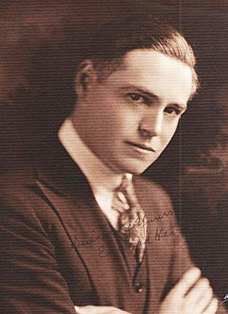
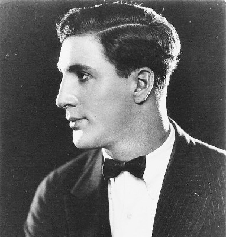

#2367 Der Hitchcock - Fremde im Zug
Alternativ: Strangers on a Train
Auszeichnungen: für 1 Oscars nominiert


 IMDB-Wertung: 8.0 / 10
IMDB-Wertung: 8.0 / 10  Metascore: 88
Metascore: 88 
Während einer Bahnfahrt wird dem Tennisspieler Guy Haines von dem exzentrischen Bruno Anthony ein makaberer Vorschlag gemacht: Mord auf Gegenseitigkeit. Bruno will Guys Frau umbringen, dafür soll Guy Brunos strengen Vater beseitigen. Guy hält diesen teuflischen Vorschlag für einen schlechten Scherz. Doch der unheimliche Fremde führt seinen Mordplan aus. Kurze Zeit später wird Guys Ehefrau ermordet aufgefunden. Nun wird Guy einerseits von der Polizei als Mörder verdächtigt, andererseits setzt ihn Bruno unter Druck. Denn nun liegt es an Guy, seinen Teil der Abmachung zu erfüllen ...
Jahr: 1951
Dauer: 92 Minuten
FSK: 12
Land: USA Studio: Warner Bros.Tonspuren:
Untertitel: Deutsch,
Auflösung: 1080p (1472x1080) Größe: 7680 MB
Genre: Thriller, Krimi,
Regisseur:  Alfred Hitchcock
Alfred Hitchcock
Drehbuch: Raymond Chandler, Czenzi Ormonde, Whitfield Cook, Patricia Highsmith, Ben Hecht
Soundtrack: Dimitri Tiomkin
Darsteller:
-  Farley Granger als Guy Haines
- Ruth Roman als Anne Morton
- Robert Walker als Bruno Antony
 Leo G. Carroll als Sen. Morton
Leo G. Carroll als Sen. Morton- Patricia Hitchcock als Barbara Morton
- Kasey Rogers als Miriam Joyce Haines
- Marion Lorne als Mrs. Antony
-  Norma Varden als Mrs. Cunningham
 John Doucette als Det. Hammond , uncredited
John Doucette als Det. Hammond , uncredited Franklyn Farnum als Party Guest , uncredited
Franklyn Farnum als Party Guest , uncredited Alfred Hitchcock als Man Boarding Train Carrying a Double Bass , uncredited
Alfred Hitchcock als Man Boarding Train Carrying a Double Bass , uncredited David McMahon als Bystander at Drain , uncredited
David McMahon als Bystander at Drain , uncredited-  Barry Norton als Tennis Match Spectator , uncredited
- Jonathan Hale als Mr. Antony
- Howard St. John als Police Capt. Turley
- John Brown als Prof. Collins
- Robert Gist als Det. Leslie Hennessey
- Joel Allen als Policeman , uncredited
 Murray Alper als Boatman , uncredited
Murray Alper als Boatman , uncredited- Monya Andre als Dowager , uncredited
- Brooks Benedict als Tennis Umpire , uncredited
 Al Bridge als Tennis Judge , uncredited
Al Bridge als Tennis Judge , uncredited- John Butler als Blind Man , uncredited
- Leonard Carey als Anthonys' Butler , uncredited
- Edward Clark als Miriam's Boss , uncredited
- Jack Cushingham als Fred Reynolds , uncredited
- John Daheim als Detective at Merry-Go-Round , uncredited
-  Roy Engel als Policeman , uncredited
-  Herbert Evans als Party Guest , uncredited
- Tommy Farrell als Miriam's Boyfriend , uncredited
 Sam Flint als Train Passenger Requesting Light , uncredited
Sam Flint als Train Passenger Requesting Light , uncredited-  Edward Hearn als Lt. Campbell , uncredited
 Al Hill als Carnival Game Proprietor , uncredited
Al Hill als Carnival Game Proprietor , uncredited- Harry Hines als Man Under Merry-Go-Round , uncredited
- Mary Alan Hokanson als Secretary , uncredited
- Edna Holland als Mrs. Joyce , uncredited
- J. Louis Johnson als Mortons' Butler , uncredited
- Mike Lally als Detective at Carnival , uncredited
- Perc Launders als Police Desk Sergeant , uncredited
- Louis Lettieri als Boy with Balloon , uncredited
-  George Magrill als Policeman at Merry-Go-Round , uncredited
- Charles Marsh als Bystander at Drain , uncredited
- Paul McGuire als Man on Train , uncredited
 Charles Meredith als Judge Donahue , uncredited
Charles Meredith als Judge Donahue , uncredited- Ralph Moody als Seedy Man at Carnival , uncredited
- Roland Morris als Miriam's Boyfriend , uncredited
- Odette Myrtil als Madame Darville , uncredited
- Paul Panzer als Bystander at Merry-Go-Round , uncredited
- Minna Phillips als Dowager , uncredited
- Georges Renavent als Monsieur Darville , uncredited
Datei: X:\Person\Hitchcock\Hitchcock - Fremde im Zug, Der (1951, FSK12, 1472x1080).mkv seit 03.11.2015
Festplatte: HD Collection-7+mehr(A-Z)+Person
 Es gibt insgesamt 25 Filme in der Gruppe 'Person\Hitchcock'
Es gibt insgesamt 25 Filme in der Gruppe 'Person\Hitchcock'